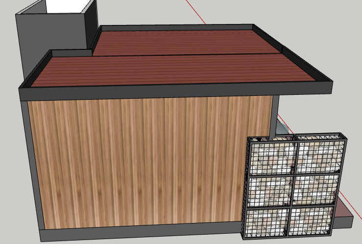
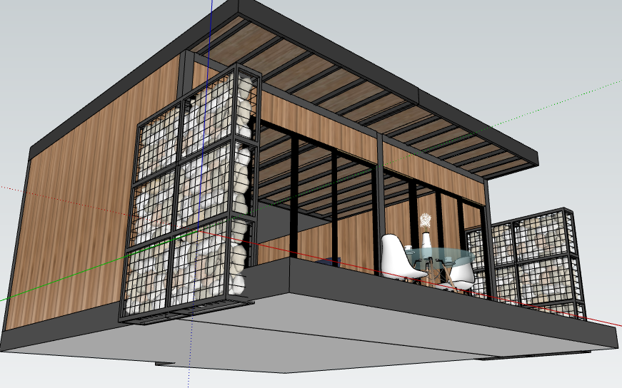

Cabañas D.H | Unidades tipo glamping en madera

Resumen ejecutivo
Cabañas D.H es un proyecto de diseño estructural para dos unidades tipo glamping desarrolladas en un entorno rural natural, con una propuesta arquitectónica y estructural orientada a la integración con el paisaje y al mínimo impacto ambiental. La solución se concibió a partir de un sistema principal en madera estructural, complementado con arriostramientos en acero y cubiertas livianas, buscando una estructura eficiente, estable y visualmente compatible con el carácter del proyecto. El enfoque técnico priorizó la reducción de cargas, la facilidad de montaje, la adaptación al terreno y la sostenibilidad constructiva, logrando una solución ligera y funcional para uso turístico rural.
Contexto y restricciones
- Uso: Alojamiento turístico tipo glamping.
- Configuración: Dos unidades independientes en entorno rural natural.
- Restricción clave: Minimizar la intervención sobre el terreno y reducir el impacto ambiental.
- Condición del proyecto: Compatibilizar estética arquitectónica, ligereza estructural y estabilidad global.
- Criterios: Bajo peso propio, facilidad constructiva, durabilidad y adecuado comportamiento lateral.
Solución estructural
La solución estructural se definió con base en un sistema liviano en madera, seleccionado por su eficiencia resistente, su relación favorable entre peso y capacidad, y su afinidad con proyectos de turismo de naturaleza. Para mejorar la estabilidad lateral del conjunto, se incorporaron arriostramientos en acero que permiten rigidizar la estructura sin comprometer la limpieza formal ni la rapidez de construcción. La cubierta liviana complementa esta lógica estructural al reducir las demandas gravitacionales sobre el sistema principal y facilitar un montaje más eficiente. En conjunto, la propuesta responde a una filosofía de diseño sostenible, técnicamente racional y adecuada para contextos rurales.
Desempeño estructural
El comportamiento estructural del sistema fue planteado bajo criterios de estabilidad, servicio y control de desplazamientos, teniendo en cuenta la naturaleza liviana de la estructura y las exigencias propias de un entorno exterior. La combinación de madera estructural y elementos de arriostramiento en acero permitió consolidar una respuesta más eficiente frente a acciones laterales, al tiempo que se mantuvo una estructura de bajo peso, favorable para la implantación en terreno rural y para una construcción menos invasiva. La propuesta se orientó a lograr seguridad estructural sin perder el carácter ligero y sostenible del proyecto.
Galería



